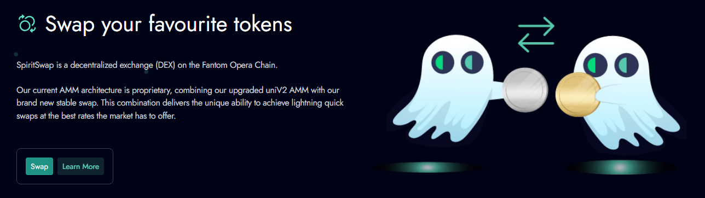

.png)
This handbook shows how to use SpiritSwap effectively: understanding SpiritSwap v2 (stable vs volatile pools), modeling effective price (received tokens minus gas/fees), and prepping funds with a SpiritSwap Bridge-style workflow. You’ll also find LP strategy notes, failure diagnostics, and an execution checklist tailored to SpiritSwap DEX.
SpiritSwap DEX — Execution & Liquidity Behavior
SpiritSwap v2 offers two pool archetypes: volatile (x·y=k) for non-correlated pairs and stable (curve-like) for correlated assets. v2’s design is predictable and gas-efficient on Fantom. The SpiritSwap DEX router may hop via wFTM or stables when intermediate depth improves effective price.
SpiritSwap v2 — Practical Comparison of Pool Types
| Dimension | v2 Stable Pools | v2 Volatile Pools |
|---|---|---|
| Liquidity Shape | Curve compresses slippage near parity (USDC/USDT) | Classic x·y=k; slippage scales with depth and trade size |
| When It Wins | Correlated pairs, stable routing, tight tolerances | FTM/ALT or non-correlated assets with steady volume |
| Routing Notes | Good pivot leg for bigger orders | Direct hop is simpler and cheap on gas |
| LP Considerations | Lower IL, fee APY depends on stable volume | Higher IL risk; fees offset if two-sided flow persists |
Swap Methods on SpiritSwap (Router, v2 Direct, Aggregators)
For small tickets, direct SpiritSwap v2 routes often suffice. For larger trades, the router may combine a stable pivot and a volatile leg to reduce price impact. If you’re arriving from another chain, use a reputable cross-chain on-ramp first (see “SpiritSwap Bridge”), then execute on SpiritSwap DEX locally.
Method Comparison for SpiritSwap Execution
| Method | Best For | Key Features | Considerations |
|---|---|---|---|
| SpiritSwap Router | Net-best price on Fantom | Chooses stable vs volatile; can hop via wFTM; weighs gas vs output | Verify token addresses; inspect route preview for size |
| Direct v2 Stable | Correlated pairs, low slippage | Curve near parity; tight execution on stables | Thin stable pools may underperform deep volatile legs |
| Direct v2 Volatile | Non-correlated pairs with depth | Simplest path and low gas | Slippage rises as order size grows |
| External Aggregator | Cross-venue comparisons | Benchmarks SpiritSwap vs others | Extra hops; compare net (gas + price) |
SpiritSwap Bridge — Cross-Chain Prep for Trading on Fantom
“SpiritSwap Bridge” generally refers to bridging assets to Fantom before swapping on SpiritSwap. Pick a reputable bridge, double-check the destination token contract on FTMScan, and bring a buffer of FTM for approvals. After funds land, execute on SpiritSwap v2 for the swap itself.
SpiritSwap Bridge Safety Checklist
- Use only official bridge URLs; avoid search-ad impostors.
- Bridge a micro-test first; validate the received token contract on Fantom.
- Keep FTM for gas after bridging; you’ll need it to approve/swap on SpiritSwap.
- Record the bridge tx hash for reconciliation/support.
Fees on SpiritSwap — Gas, Pool Fee, and Price Impact
Your effective price = received tokens minus gas (FTM) minus pool fees minus implicit price impact. SpiritSwap routing aims to minimize this total. On Fantom, gas is low, so pool depth, fee tier, and slippage discipline dominate outcomes.
Typical Fee Components
| Fee Type | Typical Range | Notes |
|---|---|---|
| Gas (FTM) | Low; varies by load | Keep a buffer; raise priority in volatile windows to reduce pending time. |
| Pool Fee (v2) | ~0.05%–0.3%+ | Varies by pool tier and model; verify before signing. |
| Price Impact | Depth-dependent | Consider splitting size or using limit orders when depth is thin. |
Advanced SpiritSwap Strategy — Slippage, MEV, and Sizing
Slippage Framework
- Stables/Majors: 0.1–0.5% typical on deep pools (v2 stable).
- Long-tail tokens: Start conservative; widen only after testing route stability.
- Volatile sessions: Slightly widen or use limit orders to avoid repeated reverts.
SpiritSwap MEV-Aware Execution
- Prefer private/builder RPC if supported; less mempool exposure.
- Split large trades; smaller footprints reduce sandwich incentives.
- Increase priority fee to shorten time-to-inclusion during spikes.
Analytics & KPIs for SpiritSwap DEX
- Quoted vs Realized Output: Track drift due to slippage, gas, and inclusion delay.
- Effective Price: Received per unit after all costs — compare routes fairly.
- Fail/Cancel Rate: Tuning indicator for slippage and RPC health.
Liquidity Providing on SpiritSwap v2
As an LP, you earn fees but take inventory risk. v2 volatile pools carry classic impermanent loss; v2 stable pools mitigate it for correlated pairs. Align pool choice with your risk tolerance and with organic, two-sided flow on SpiritSwap DEX.
LP Best Practices
- Pick pairs with persistent flow and sensible fee tiers.
- Model IL vs fee income under different price paths; avoid extrapolating from a single day.
- Prefer stable pools for correlated assets; volatile pools require stronger conviction on flow.
Troubleshooting SpiritSwap — Common Errors & Fixes
- INSUFFICIENT_OUTPUT_AMOUNT: Price moved; refresh quotes, widen slippage modestly, or split size.
- TRANSFER_FROM_FAILED: Missing/insufficient allowance or token fee-on-transfer. Re-approve the minimum and retry.
- Pending too long: Raise priority fee or switch RPC; reduce mempool exposure with private routing if available.
- Unexpected token received: Verify exact contract addresses on FTMScan; confirm pool path in the route preview.
Authoritative & Trustworthy Resources
Validate every step with primary sources and explorers.
- FTMScan — Verify Fantom token contracts and track transactions.
- MetaMask Learn — Approvals, gas, and wallet safety.
- Uniswap Docs — AMM fundamentals relevant to SpiritSwap v2 behavior.
SpiritSwap FAQ — Bridge, v2, Fees, Safety
When should I choose SpiritSwap v2 stable vs volatile?
Stable: correlated pairs with tight peg; Volatile: non-correlated assets with depth. The router typically selects the better path by effective price.
How do I use the SpiritSwap Bridge safely?
Use reputable bridges from official links only. Bridge a small test, verify destination contracts on FTMScan, and keep FTM for gas. Then swap on SpiritSwap DEX.
What slippage should I set on SpiritSwap?
Stables/majors: 0.1–0.5% typical. Long-tail tokens may require more. If swaps fail, refresh, adjust slippage modestly, or split the order.
How can I reduce MEV on Fantom?
Prefer private/builder RPC, use tighter slippage, avoid peak volatility, and split large trades. Faster inclusion reduces mempool exposure.
Why is realized output different from the quote?
Market moves, pool fees, and inclusion delay. Track effective price (received minus costs) and compare routes on that basis.
Do I need KYC to trade on SpiritSwap?
SpiritSwap is wallet-connected. Typically no KYC, but follow your local reporting rules and keep records.
How big can I trade without heavy slippage?
It depends on pool depth. For size, check route preview, split orders, or consider limit orders/DCA if your toolset supports it.
How do I verify the correct token on SpiritSwap?
Use FTMScan and official project docs to match contract addresses. Never rely on ticker names or icons alone.
My tx failed — what should I do?
Re-quote, widen slippage slightly, raise priority fee, confirm allowances, and verify token contracts. As needed, revoke and re-approve the minimum.